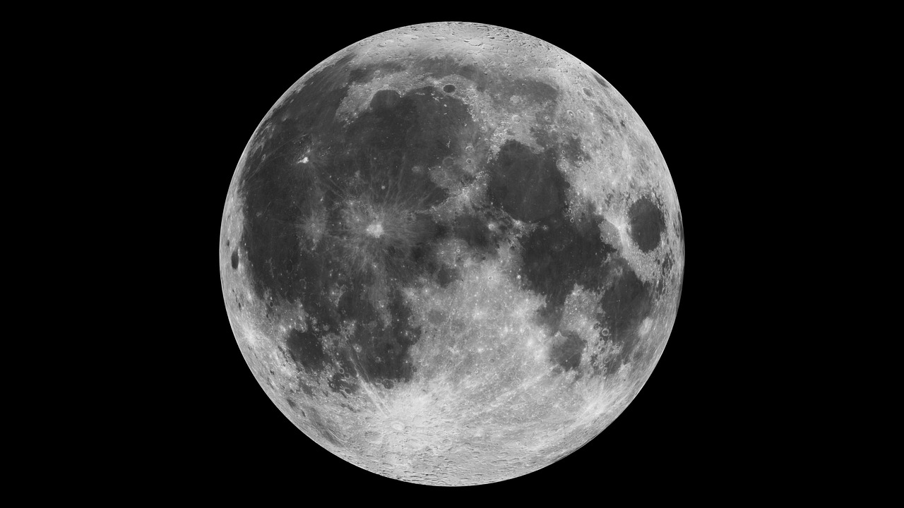
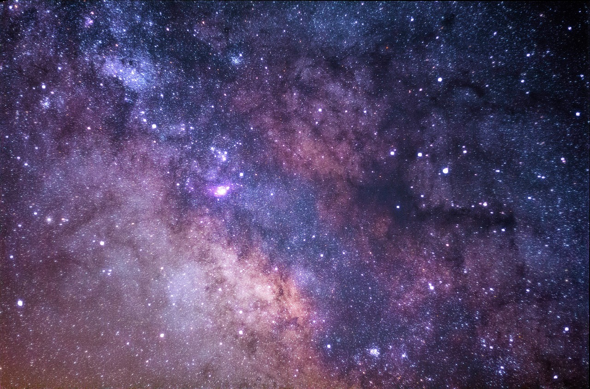
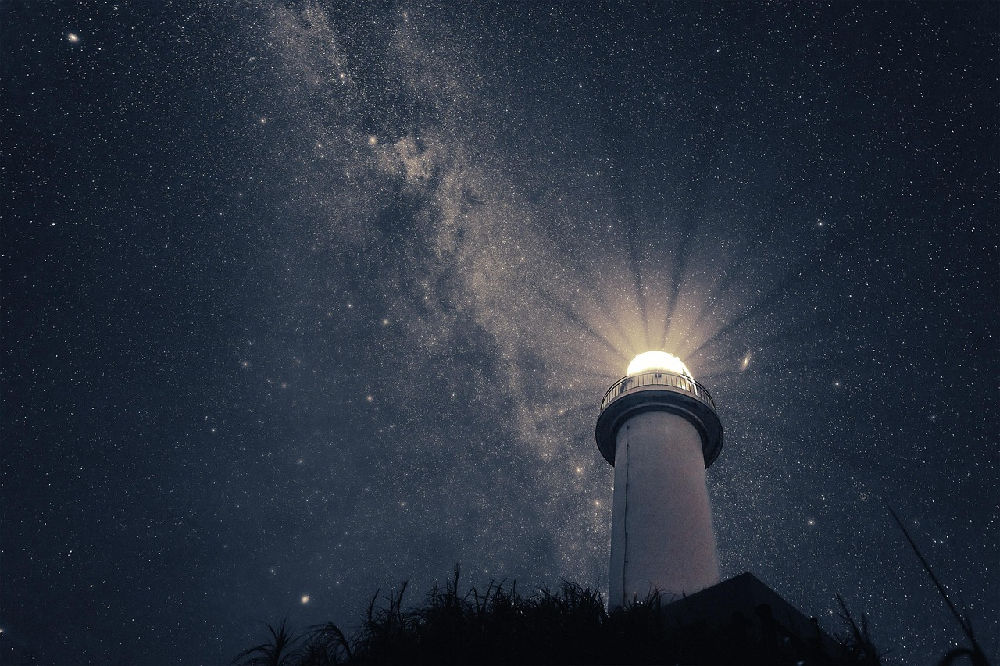
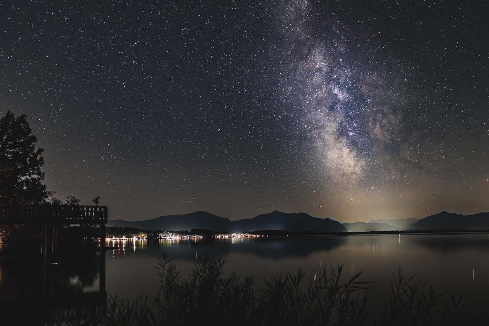

A public observatory on the open fell, two hours from any streetlight. Come for one night, and see the Milky Way, the craters of the Moon and, if you're lucky, the aurora.
Tea in the warm room, a red torch each, and twenty minutes for your eyes to adjust. Astronomical dark falls at 18:41 in November.
On a moonless night you can count over 2,000 stars by eye. The Summer Triangle hangs high in the west, with the Milky Way running through it.
Our 20-inch telescope takes you from the whole Moon to the walls of Copernicus. Members can book a slot to photograph it.
At 55° north, a Kp 5 storm brings the aurora low over the fell. Members get a text the moment our magnetometer twitches.

Two hours on the terrace and in the dome with a guide. Warm drinks, red torches and blankets included.
First-quarter Moon through the 20-inch. Bring a phone and we'll help you take a photo at the eyepiece.
Dusk to 1 am. From tripod Milky Way shots to tracked deep-sky images of the Andromeda galaxy.
Planets, a planetarium show and hot chocolate. Finishes by 8:30 pm for small astronomers.

Milky Way core · members' image
Coast trip · August
Kielder Water · 02:10The fell is always colder than you think. Bring a hat and boots, and leave your phone torch off. We'll send a weather call at 3 pm on the day, and if it's cloudy, your ticket moves to another night for free.